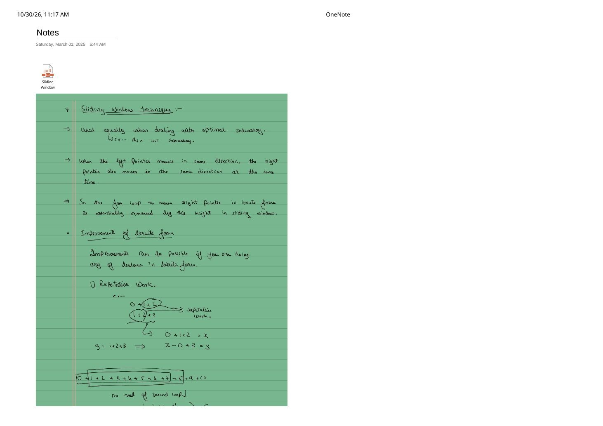
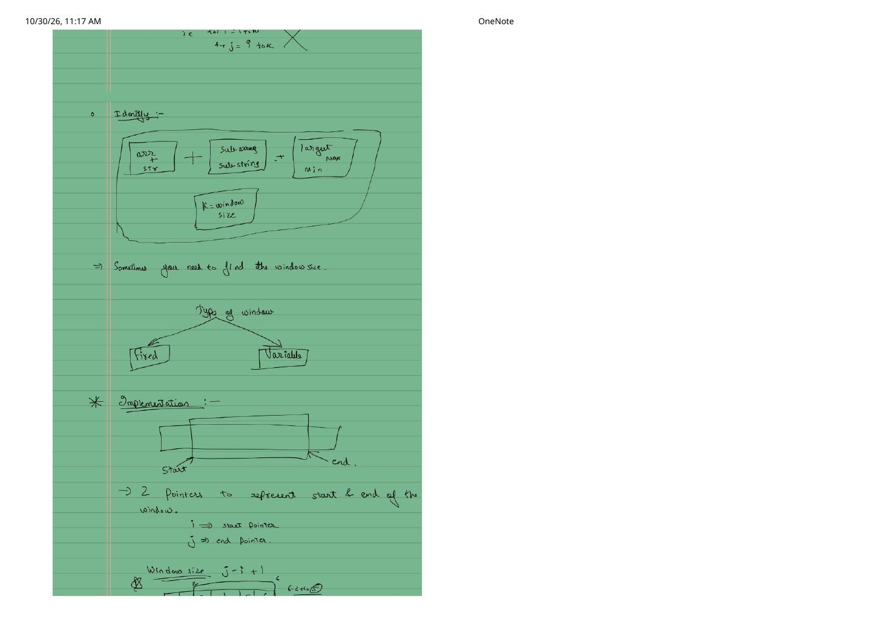
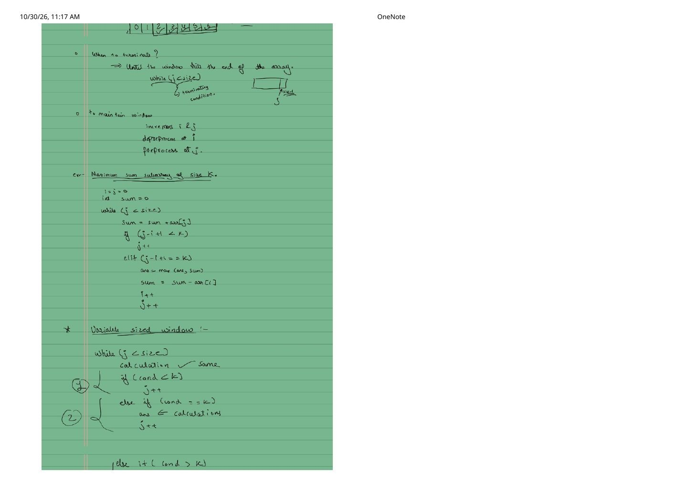
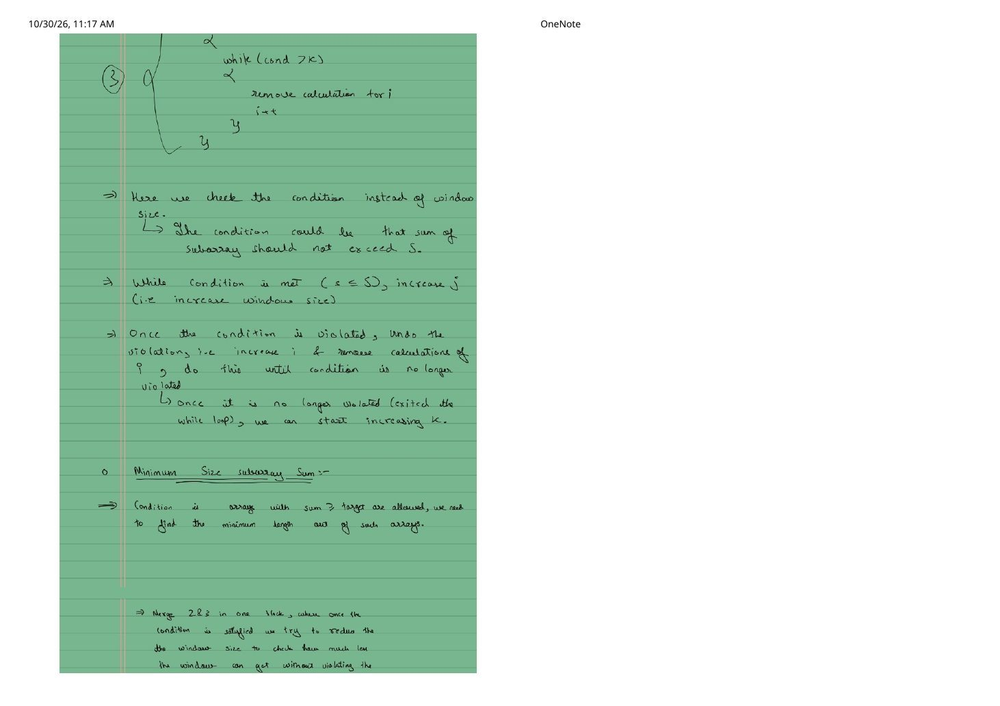
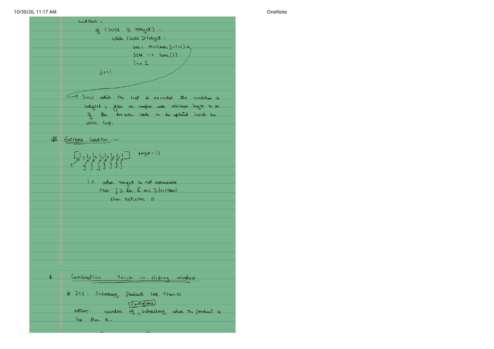
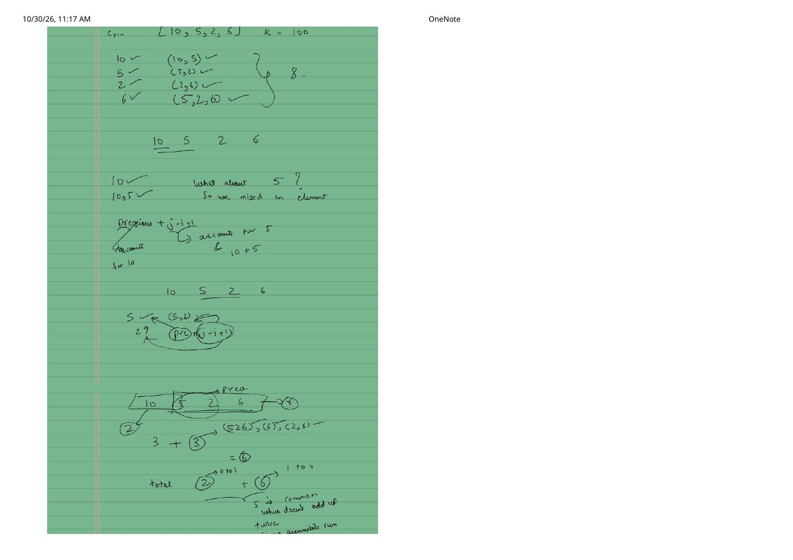
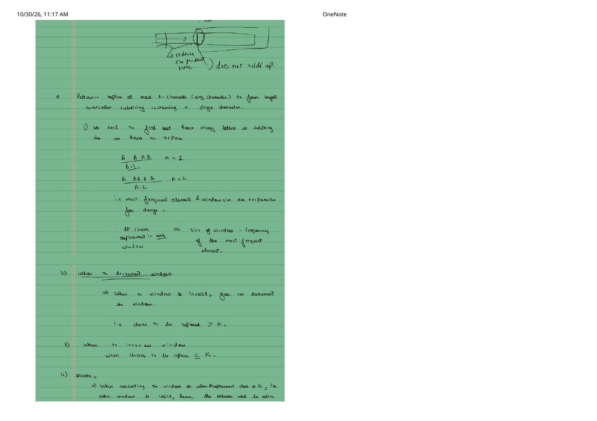
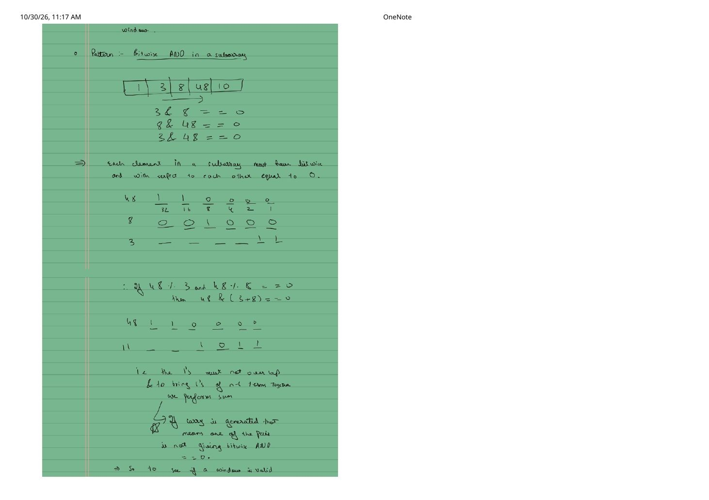
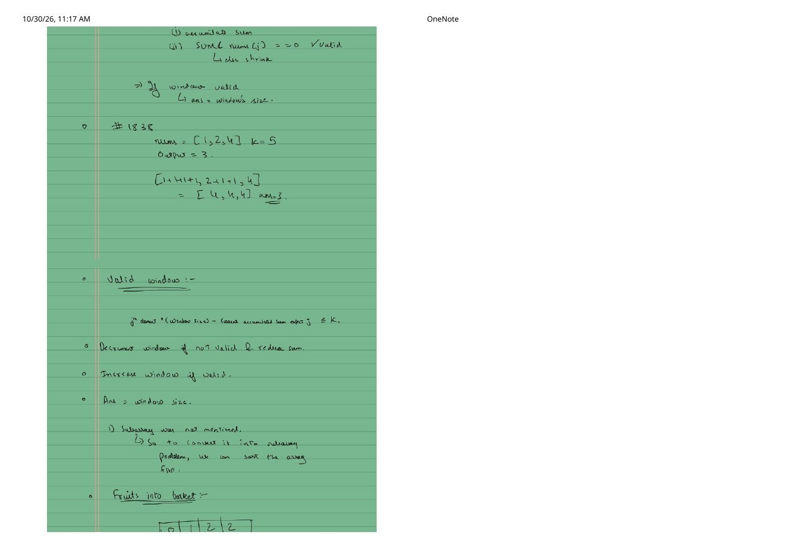
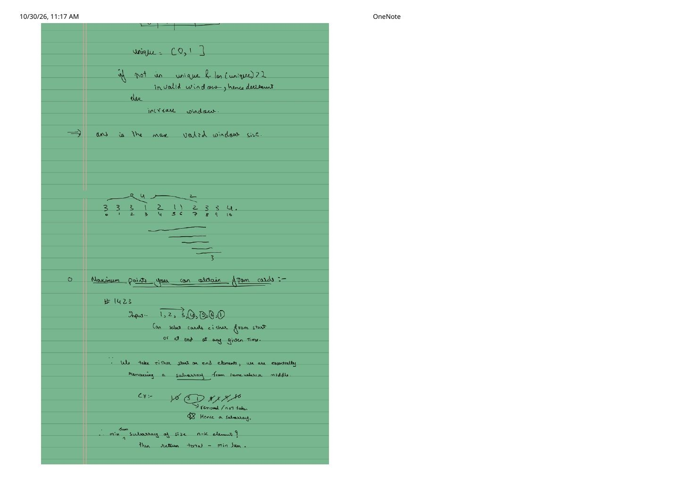

Sliding Window Problem Notes (Part 1): Core Templates, Subarray Counting & Bitwise Windows
Expanded from handwritten competitive coding study notes (01_Notes.pdf, Pages 1–10)
This note walks faithfully through the first 10 pages of 01_Notes.pdf—starting from why sliding windows eliminate redundant inner loops, building the fixed and variable window skeletons, and solving eight classic LeetCode problems with exact pointer traces and production C++ implementations.
1. Eliminating Repetitive Work & Identifying Sliding Window Problems
In a naive $O(n \cdot k)$ or $O(n^2)$ subarray scan, shifting the subarray by one index recomputes $(k - 1)$ overlapping elements all over again:
Incremental State Reuse (Pages 1–2)
Consider consecutive windows of size $3$ over $[0, 1, 2, 3, \dots]$:
Because the left pointer $i$ and right pointer $j$ both move monotonically rightward, the inner brute-force loop for (int j = i; j < i + k; ++j) disappears completely.
How to Spot a Sliding Window Problem
Look for the four-part problem signature sketched on Page 2:
Array / String + Contiguous Subarray / Substring + Largest / Max / Min / Count + Window Size k (given or sought)
- Fixed-size window: $k$ is given explicitly; maintain $j - i + 1 == k$.
- Variable-size window: A constraint $f(i..j) \le k$ (or $\ge \text{target}$) is given, and you optimize or count window size $j - i + 1$.
2. Fixed-Size vs. Variable-Size Window Mechanics (Pages 3–4)
With $i$ as the start pointer and $j$ as the end pointer, the number of elements in $[i..j]$ is always $\text{window\_size} = j - i + 1$ (e.g., $i = 2, j = 6 \implies 6 - 2 + 1 = 5$ elements). On Page 3, the fixed-window template is demonstrated via Maximum Sum Subarray of Size $K$:
#include <algorithm>
#include <climits>
#include <vector>
long long maxSumSubarrayOfSizeK(const std::vector<int>& arr, int k) {
int i = 0, j = 0, n = static_cast<int>(arr.size());
long long sum = 0, ans = LLONG_MIN;
while (j < n) {
sum += arr[j]; // 1. Preprocess incoming element at j
if (j - i + 1 < k) {
++j; // Grow until window first reaches size k
} else if (j - i + 1 == k) {
ans = std::max(ans, sum); // 2. Record candidate from valid k-window
sum -= arr[i]; // 3. Depreprocess outgoing element at i
++i;
++j; // 4. Slide both pointers together
}
}
return ans;
}For a variable-sized window (Pages 3–4), instead of checking $j - i + 1$ against $k$, we check a monotonic window condition (such as subarray sum $\le S$): expand $j$ while valid, and whenever condition > k, run a while loop incrementing $i$ and undoing arr[i]'s contribution until validity is restored.
3. Minimum Size Subarray Sum — LC 209 (Pages 4–5)
Given positive integers nums and a positive integer target, find the minimal length of a contiguous subarray with sum $\ge \text{target}$, or return $0$ if none exists.
Notice the twist from Page 4: here a window is valid when sum >= target, and we want the shortest valid window. So we merge "record answer" and "shrink $i$" into a single while (sum >= target) block—squeezing the window as tight as possible while it remains valid!
Extreme Condition Trap (Page 5)
Consider nums = [1, 1, 1, 1, 1, 1, 1, 1] with target = 11. Even after accumulating the entire array ($j = n - 1$), sum = 8 < 11, so the inner while (sum >= target) never executes! Always initialize ans = INT_MAX (or n + 1) and check ans == INT_MAX ? 0 : ans before returning.
int minSubArrayLen(int target, const std::vector<int>& nums) {
int n = static_cast<int>(nums.size());
int ans = INT_MAX;
long long sum = 0;
for (int i = 0, j = 0; j < n; ++j) {
sum += nums[j];
while (sum >= target) {
ans = std::min(ans, j - i + 1); // Valid! Update minimum BEFORE shrinking
sum -= nums[i++];
}
}
return ans == INT_MAX ? 0 : ans;
}4. The Combination Trick: Subarray Product Less Than $K$ — LC 713 (Pages 5–7)
Given an array of positive integers nums ($nums[x] \ge 1$) and integer $k$, count the number of contiguous subarrays whose product is strictly less than $k$.
Handwritten Dry Run on nums = [10, 5, 2, 6], k = 100 (Page 6)
Why does ans += (j - i + 1) count every valid subarray without double-counting overlapping elements like 5? Because at step $j$, it counts only valid subarrays that END at index $j$:
- $j = 0$ (
10): $\text{prod} = 10 < 100$, window $[10]$ ($i=0, j=0$). New subarrays ending at $j=0$:[10]$\implies +(0 - 0 + 1) = \mathbf{1}$. - $j = 1$ (
5): $\text{prod} = 50 < 100$, window $[10, 5]$ ($i=0, j=1$). New subarrays ending at $j=1$:[5],[10, 5]$\implies +(1 - 0 + 1) = \mathbf{2}$. (Running total $= 3$; notice[10]was counted at $j=0$, not again!) - $j = 2$ (
2): $\text{prod} = 100 \not< 100 \implies$ divide outnums[0] = 10, so $i = 1, \text{prod} = 10 < 100$, window $[5, 2]$. New subarrays ending at $j=2$:[2],[5, 2]$\implies +(2 - 1 + 1) = \mathbf{2}$. (Note:[5]alone is NOT recounted because it ended at $j=1$!) - $j = 3$ (
6): $\text{prod} = 60 < 100$, window $[5, 2, 6]$ ($i=1, j=3$). New subarrays ending at $j=3$:[6],[2, 6],[5, 2, 6]$\implies +(3 - 1 + 1) = \mathbf{3}$.
Total $= 1 + 2 + 2 + 3 = \mathbf{8}$ valid subarrays.
int numSubarrayProductLessThanK(const std::vector<int>& nums, int k) {
if (k <= 1) return 0; // Since nums[x] >= 1, no product can be strictly < 1!
long long prod = 1;
int ans = 0;
for (int i = 0, j = 0; j < static_cast<int>(nums.size()); ++j) {
prod *= nums[j];
while (prod >= k) {
prod /= nums[i++];
}
ans += (j - i + 1);
}
return ans;
}5. Longest Repeating Character Replacement — LC 424 (Pages 7–8)
Given an uppercase string s and integer $k$, you may replace at most $k$ characters with any uppercase letter. Find the length of the longest substring containing all identical letters after at most $k$ replacements.
Minimum Replacements Needed in Any Window $[i..j]$
To turn every character in $[i..j]$ into a single letter using the fewest edits, keep the most frequent character in the window untouched and replace everything else:
"ABAA", k = 1: length $4$, $\max\text{freq}('A') = 3 \implies 4 - 3 = 1 \le 1$ (replace the single'B'$\to$ length $4$)."ABBBA", k = 2: length $5$, $\max\text{freq}('B') = 3 \implies 5 - 3 = 2 \le 2$ (replace both'A's $\to$ length $5$).
#include <string>
int characterReplacement(const std::string& s, int k) {
int freq[26] = {0};
int max_freq = 0, best = 0;
for (int i = 0, j = 0; j < static_cast<int>(s.size()); ++j) {
max_freq = std::max(max_freq, ++freq[s[j] - 'A']);
// If replacements needed exceed k, shrink from left by 1
while ((j - i + 1) - max_freq > k) {
--freq[s[i++] - 'A'];
}
best = std::max(best, j - i + 1);
}
return best;
}Subtle $O(n)$ optimization note: Even if max_freq is not recomputed downward when shrinking $i$, we only ever care about beating our best window length so far—which requires finding a strictly larger max_freq later anyway! You can also recompute $\max_{c \in [0..25]} \text{freq}[c]$ in $O(26) = O(1)$ if you want exact per-step validity.
6. Pairwise Bitwise AND $== 0$: Longest Nice Subarray — LC 2401 (Pages 8–9)
A subarray is called nice if the bitwise AND of every pair of elements at distinct positions is $0$. Find the length of the longest nice subarray (e.g., on [1, 3, 8, 48, 10], the subarray [3, 8, 48] has length $3$).
Handwritten Non-Overlapping Bits Proof (Page 8)
Write 48, 8, and 3 in 6-bit binary:
48 = 1 1 0 0 0 0 (32 + 16)
8 = 0 0 1 0 0 0 (8)
3 = 0 0 0 0 1 1 (2 + 1)
----------------
OR = 1 1 1 0 1 1 (59 = 48 + 8 + 3 — zero carries!)Pairwise AND is $0$ across all pairs in $[i..j]$ if and only if no bit position has more than one 1 across the entire window! Equivalently, if we maintain the union of active bits used_bits (via bitwise OR or sum, since disjoint bits never generate a carry):
nums[j]conflicts with some element in $[i..j-1]$ iff(used_bits & nums[j]) != 0.- While
(used_bits & nums[j]) != 0, clearnums[i]'s bits cleanly in $O(1)$ using XORused_bits ^= nums[i++](orused_bits -= nums[i++])!
int longestNiceSubarray(const std::vector<int>& nums) {
int used_bits = 0, best = 0;
for (int i = 0, j = 0; j < static_cast<int>(nums.size()); ++j) {
while ((used_bits & nums[j]) != 0) {
used_bits ^= nums[i++]; // Clear nums[i]'s disjoint 1-bits
}
used_bits |= nums[j]; // Claim nums[j]'s 1-bits
best = std::max(best, j - i + 1);
}
return best;
}7. Sort + Sliding Window: Frequency of the Most Frequent Element — LC 1838 (Page 9)
Given an array nums and budget $k$, in one operation you can increment any element by $1$. Return the maximum possible frequency of an element after at most $k$ increments (e.g., nums = [1, 2, 4], k = 5 $\to$ increment $1$ by $+3$ and $2$ by $+2$ to get [4, 4, 4], output $3$).
nums turns optimal subset selection into a contiguous sliding window $[i..j]$ whose cost to level everything up to nums[j] is:
#include <algorithm>
#include <vector>
int maxFrequency(std::vector<int> nums, int k) {
std::sort(nums.begin(), nums.end());
long long window_sum = 0;
int best = 0;
for (int i = 0, j = 0; j < static_cast<int>(nums.size()); ++j) {
window_sum += nums[j];
while (static_cast<long long>(nums[j]) * (j - i + 1) - window_sum > k) {
window_sum -= nums[i++];
}
best = std::max(best, j - i + 1);
}
return best;
}8. Fruit Into Baskets (LC 904) & Card Points via Complement Window (LC 1423) (Pages 9–10)
LC 904: Fruit Into Baskets ($\le 2$ Distinct Elements)
Picking fruits continuously into two baskets is literally longest subarray with at most $2$ distinct integers. On the Page 10 trace [3, 3, 3, 1, 2, 1, 1, 2, 3, 3, 4], when index $4$ introduces 2 alongside {3, 1}, basket.size() == 3 > 2, so we decrement counts from $i = 0$ until all three 3s leave the map, leaving [1, 2, 1, 1, 2] of length $5$:
#include <unordered_map>
#include <vector>
int totalFruit(const std::vector<int>& fruits) {
std::unordered_map<int, int> freq;
int best = 0;
for (int i = 0, j = 0; j < static_cast<int>(fruits.size()); ++j) {
++freq[fruits[j]];
while (freq.size() > 2) {
int left_fruit = fruits[i++];
if (--freq[left_fruit] == 0) {
freq.erase(left_fruit); // Must erase 0-count keys so size() == distinct count!
}
}
best = std::max(best, j - i + 1);
}
return best;
}LC 1423 Revisited: The Complement Subarray View (Page 10)
Page 10 records the complementary angle to Striver's $O(k)$ rotation from Part 1: whenever we pick $k$ cards from either the start or the end of cardPoints (e.g., [1, 2, 3, 4, 5, 6, 1]), the $m = n - k$ cards left behind always form a single contiguous middle subarray! Maximizing picked cards is therefore identical to finding the minimum-sum subarray of fixed length $n - k$ and returning total_sum - min_middle_sum.
From the Handwritten Notes
Expand the original handwritten pages (Pages 1–10 of 01_Notes.pdf) below to inspect every original sketch, trace, and formula:
View original note — Page 1: Why Sliding Window Eliminates Inner Brute-Force Loops


01_Notes.pdf: monotonic pointer movement and eliminating repetitive addition across overlapping windows.View original note — Page 2: Identifying Sliding Window Signatures & Fixed vs. Variable Windows


01_Notes.pdf: problem recognition checklist and start/end pointer window size $j - i + 1$.View original note — Page 3: Max Sum Subarray of Size K & Variable Window Skeleton


01_Notes.pdf: termination condition, preprocess/depreprocess cycle, and variable-size branches.View original note — Page 4: Variable Window Shrinking & Intro to Minimum Size Subarray Sum


01_Notes.pdf: undoing condition violations with a while loop and merging valid + shrink steps for LC 209.View original note — Page 5: LC 209 Unreachable Target Edge Case & Intro to LC 713


01_Notes.pdf: updating minimum length inside the shrink loop, extreme condition [1,1,...,1], and LC 713 setup.View original note — Page 6: LC 713 Subarray Product Less Than K Dry Run ([10, 5, 2, 6])


01_Notes.pdf: counting contiguous subarrays ending at $j$ via j - i + 1 without double-counting overlapping elements.View original note — Page 7: LC 424 Longest Repeating Character Replacement


01_Notes.pdf: deriving $\text{replacements} = \text{window\_size} - \text{max\_freq}$ on "ABAA" and "ABBBA".View original note — Page 8: LC 2401 Bitwise AND == 0 in a Subarray ([1, 3, 8, 48, 10])


01_Notes.pdf: binary bit table for 48, 8, and 3 proving pairwise AND is zero iff set bits never overlap.View original note — Page 9: LC 1838 Frequency of the Most Frequent Element & Fruit Into Baskets


01_Notes.pdf: sorting [1, 2, 4] to enable sliding window leveling cost nums[j] * len - sum <= k.View original note — Page 10: LC 904 Trace & LC 1423 Minimum Middle Subarray Trick


01_Notes.pdf: 2-unique-elements trace and reducing card-end selection to total - min_subarray(n - k).